| Length | Type | Checksum |
|---|---|---|
| from 1 to 3116 digits (variable) | numeric, alphanumeric or byte |
yes (Reed-Solomon) |
The encoded data size depends on the type and the length od the data to data to code.
An intermediate structure of 8 bits is used to save each data: the codeword.
A symbol is composed of 3 groups of codewords:
The encoding requires 2 steps:
A symbol is composed of black and white rectangular patterns called "cells" or "modules".
A module represent a bit: usually black for the "1" and white for the "0".
The DATA MATRIX can be a square (mostly used) or rectangular.
The symbole can be decomposed into 3 parts:

When the symbol exceeds a certain size limit, the symbol is divided into data areas, regions, which are defined by internal locating designs. Four types of division into regions exist: 3 for square and 1 rectangular shape.
Six encoding modes coexist: ASCII, Text, C40, X12, EDIFACT and Base 256. The ASCII encoding is the default encoding and the most used. It will be presented here only.
The set of values of the ASCII mode codewords are visible in the following table:
| Codeword value | Meaning |
|---|---|
| 1 - 128 | ASCII characters (ASCII value + 1) |
| 129 | first stuffing character |
| 130 - 229 | Number between 00 and 99 (numeric value + 130) |
| 230 | Begin C40 encoding |
| 231 | Begin Base 256 encoding |
| 232 | FNC1 |
| 233 | Structured append. Allows a message to be split across multiple symbols |
| 234 | Reader programming |
| 235 | Upper Shift - Set high bit of the following character |
| 236 - 237 | 05 Macro - 06 Macro |
| 238 | Begin ANSI X12 encoding |
| 239 | Begin Text encoding |
| 240 | Begin EDIFACT encoding |
| 241 | ECI - Extended Channel Interpretation code |
| 242 - 255 | Not used |
Some of the values will not be explained because not used in the ASCII explanation.
In the ASCII mode, some data are encoded according to three possibilities:
When the number of data codewords can completely fill the "data" part of the symbol smaller possible codewords filler are added. The first of these codewords, which indicates the end of data in this case is always "129". Following is calculated using the following algorithm 253-state:
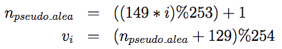The Reed-Solomon codes are used as error correction system. They have a capacity of detection and correction of errors defined in advance, depending on the size of the data matrix.
A body C is a set of elements provided with two closed and called binary operations addition and multiplication. Being closed means that the result of each operation on two elements of the assembly will always be an element of the assembly.
There are many bodies, finite and infinite. It turns out that for any integer prime p and any integer n (>=1), there exists a unique finite np elements, noted GF(np). These bodies are called Galois fields.
We can represent the elements of GF(np) using the basic elements of a : 0, 1, a, a2, a3, ..., a(n-1). Let's take an example:
Elements can also be represented in different forms: binary, decimal, or even in the form of a polynomial. For the same example as:
For each Galois field, there is at least one primitive polynomial, denoted by p (x), which allows to build the body. Data Matrix storing data of 8 bits (in codewords), and therefore work in the Galois field GF(28). They use the primitive polynomial x8+x5+x3+x2+1, which corresponds to the value 301.
The addition and subtraction of two elements is the XOR (exclusive OR) between these two elements. Multiplication and division are calculated by multiplying the corresponding polynomials. This operation is relatively expensive in computation time, an algorithm is used. Since all components are a power of primitive polynomial p, must be sought for each element c, i power as:
From there, we can calculate for two elements c and d:
We can get the e antilogs table thanks to this algorithm:
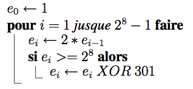A Reed-Solomon code of length n with k data is noted RS(n,k). So there is n-k = 2t check symbols and this code can correct up to t erroneous symbols. The number of control symbols is defined by the size of the Data Matrix.
The equation for encoding a RS(n,k) code is:
with
The 2t check symbols are derived from a polynomial power generator 2t, 2t + 1 compound words, which is of the following form:
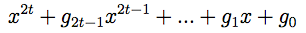There are 16 block lengths of Reed-Solomon possible (see summary table). The coefficients of the generator polynomials can be calculated using the following algorithm:
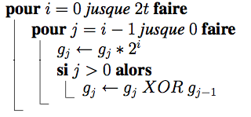Once the generator polynomial calculated, we simply follow the equation to obtain the control polynomial: it is the rest of the division between the data polynomial and the generator polynomial. Coefficients correspond to codewords control.
For Data Matrix symbols containing a total of less than 255 codewords (all symbols rectangular and square sizes less than 48x48), the codewords correction are calculated directly from the data codewords. For other symbols, the codewords correction are calculated in accordance with a procedure of interleaving: dividing the codewords into several data blocks of same size and correction codewords are computed block by block. Each codeword c is part of the group:
with n the number of blocks for the symbol
For simplicity, for n blocks, the first group consists of data codewords 1, n +1, 2n +1, 3n +1, ... the second group of data codewords 2, n +2, 2n +2, 3n +2,...
An example of interleaving can be viewed as follows:
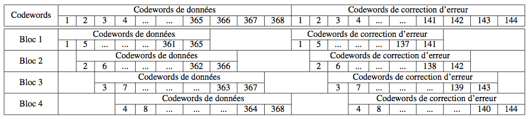Each codeword is represented in the data matrix by a square part of 8 modules, corresponding to 8 bits. Module 1 has the value of the most significant bit (value 128), while the module 8 has the value of the most insignificant bit (value 1).
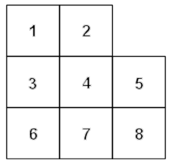It is however possible that a codeword can not be contained entirely within the matrix at a certain location. These can then be separated into parts (2 or 3) to be continued on the other side of the symbol.
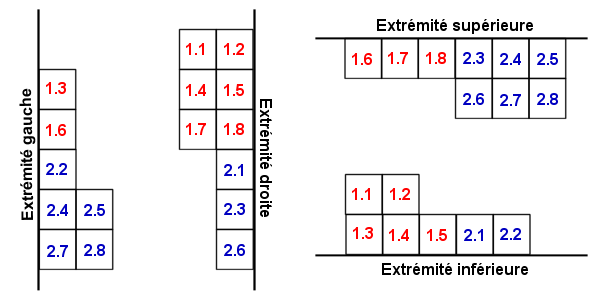In addition, in four cases, the codewords placed in the corners can also be placed differently.
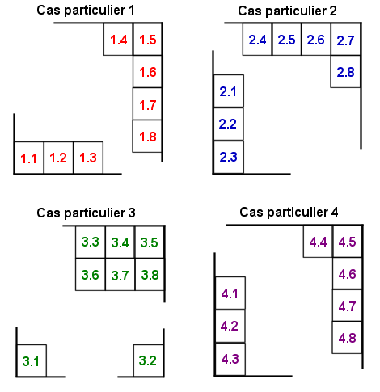Placement in the matrix follows a certain order. The initial codewords are always placed as follows:
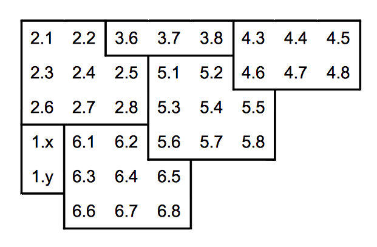The codewords are then nested in the other, following the oblique lines (45 °) in parallel. The meaning is identical slashes half the time.

It may, depending on the size of the symbol, the four modules of the lower right corner are empty. Symbols 12x12 example, the data matrix is 10x10, which give 100 modules in 12 codewords can be inserted. Knowing that a codeword full 8 modules, a total of 96 modules will be occupied and the last 4 remain empty. To fill, use of alternating black and white modules as shown below:
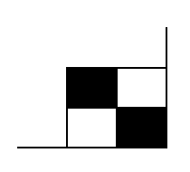It will then add the finder pattern and possibly the main internal finder pattern if the number of regions is greater than 1.
Suppose we want to encode "ENC01." ASCII values of the characters are:
| E | N | C | 0 | 1 |
| 69 | 78 | 67 | 48 | 49 |
Depending on how ASCII, the values of codewords will be:
| Codeword | Method | Evaluation | ASCII value | Binary value |
|---|---|---|---|---|
| C1 | ASCII value + 1 | 69 + 1 | 70 | 0100 0110 |
| C2 | ASCII value + 1 | 78 + 1 | 79 | 0100 1111 |
| C3 | ASCII value + 1 | 67 + 1 | 68 | 0100 0100 |
| C4 | Numeric value + 130 | 1 + 130 | 131 | 1000 0011 |
The value of codewords 1, 2 and 3 were calculated simply by using the "ASCII value + 1", while the codeword 4 encodes two digits using "130 + numeric value."
It has four codewords to encode, therefore we choose the minimum size of the symbol to encode: it is the symbol of size 12x12, offering a data matrix of size 10x10 and 12 codewords to encode compounds 5 codewords and data correction codewords 7. Knowing that 5 codewords data are needed and that we do not have that 4, a codeword filling will be added: it is the codeword value "129", which is always the first to indicate the end of data. It is not necessary to calculate other using the 253-state algorithm.
| Codeword | ASCII value | Binary value |
|---|---|---|
| C5 | 129 | 1000 0001 |
Compared to what we saw earlier, we know that:
As a reminder, the operations occur in GF(28). With the algorithms presented above, the generator polynomial was calculated:
The calculation of the codewords representing polynomial correction is performed like this:
The correction codewords, corresponding to the coefficients of the polynomial are:
| Codeword | ASCII value | Binary value |
|---|---|---|
| C6 | 4 | 0000 0100 |
| C7 | 133 | 1000 0101 |
| C8 | 98 | 0110 0010 |
| C9 | 49 | 0011 0001 |
| C10 | 253 | 1111 1101 |
| C11 | 53 | 0011 0101 |
| C12 | 182 | 1011 0110 |
Must then place these codewords in the data matrix according to the appropriate algorithm. The order of placement is as follows:
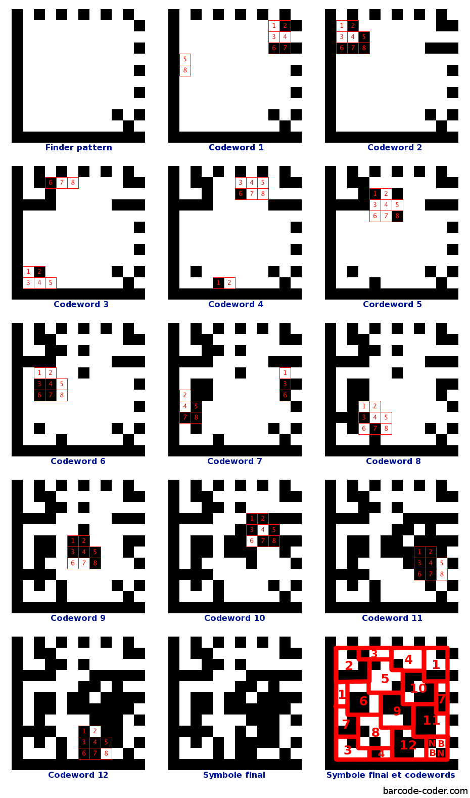Please enter the code: